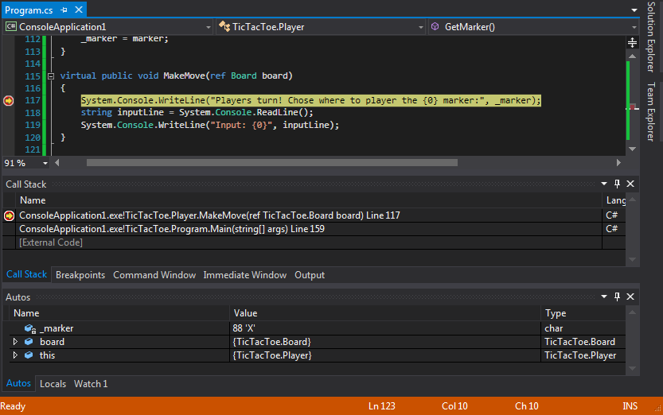
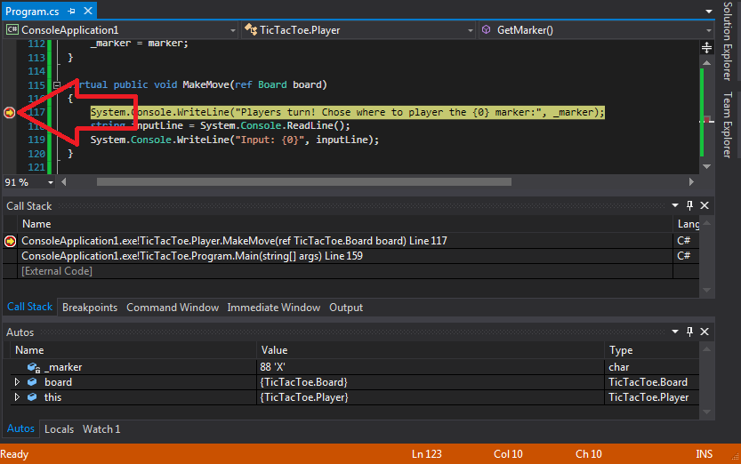
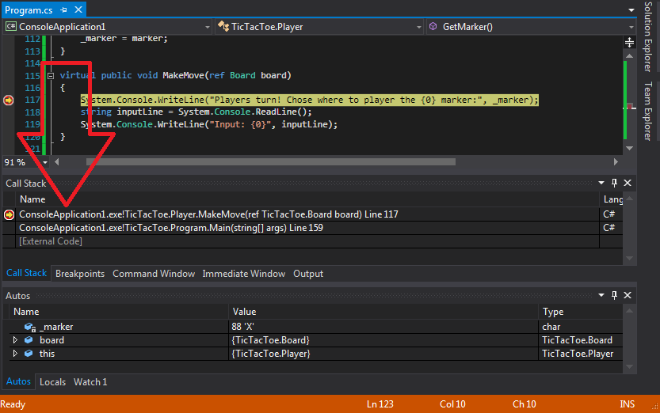

class: center, middle # Make Your Own Program By Nathan Ross Powell Source: [make_your_own_program/README.md](https://github.com/nathanrosspowell/presentations/blob/master/src/beginner_guides/make_your_own_program/README.md) Webpage: [make_your_own_program/index.html](http://nathanrosspowell.com/presentations/beginner_guides/make_your_own_program) ??? These are where the slide notes go. --- # Intro First, we will go over how to use the debugger more effectivly. You will have used the debugger for the practical work in this series. This code, while challenging, has been kept as minimal as possible. When making your own programs you will add _A LOT_ of code. It is important to be able to use the debugger to correctly identify the mistakes you have made. Secondly, we will outline potential personal projects. To make your own program you need to set your own goals and requirements. These will be different for each person and it will lead to everyone having their own solutions. Hopefully everything you've learned (and been refreshed on) will come in useful! --- # Debugging * Breakpoints * Program Counter * Callstack * Watch Window --- # Breakpoints * Red mark set on code lines * Set with `F9` * Stops the program BEFORE that line of code runs  --- # Program Counter * Yellow arror on code line * Step into function with `F11` * Step to next line with `F10`  --- # Callstack *  --- # Personal Projects * Command console game * Tic Tac Toe * Boilerplate `C#` version provided * Also in `C++` * A game of your own choice * Soliatre (counter version) * Connect 4 * etc * `C#` GUI tool * A program to report on the contense of a file * A 'open file' boilerplate program provided * A utility program to automate a task * Pick a repetitive task that you want to make easier * Think if you could automate that * Anything else... * If you have something specific, that is best! * Support will be provided --- # Make A Game --- # Make A Tool --- # Make Anything! --- class: center, middle # Questions? ??? Notes: ... --- class: center, middle # End Got back to the [make_your_own_program](http://nathanrosspowell.com/presentations/beginner_guides/make_your_own_program) page to see the practical work. ??? Notes: ...